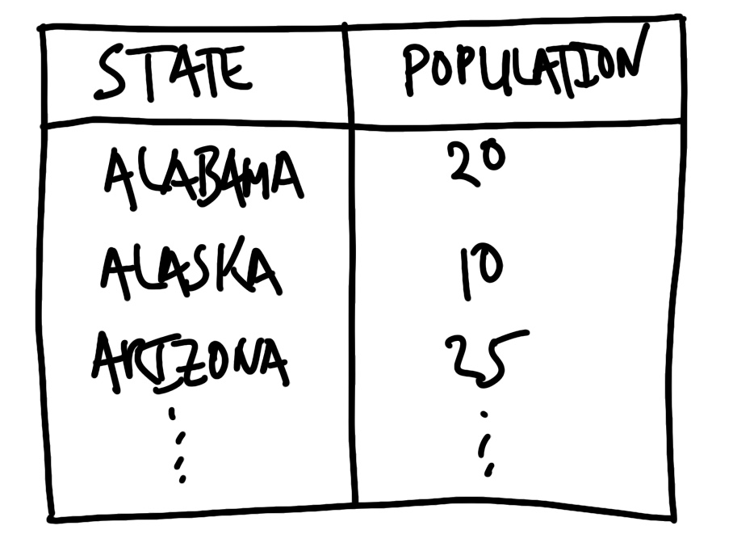
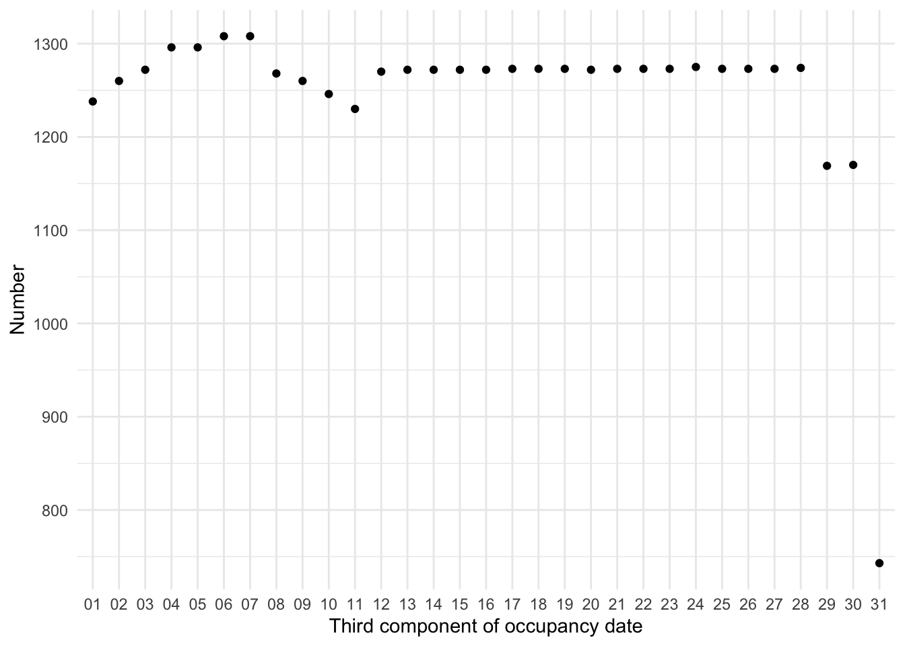
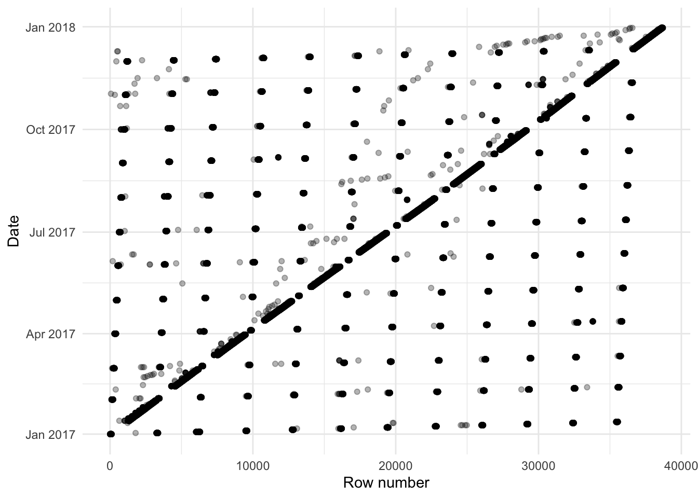
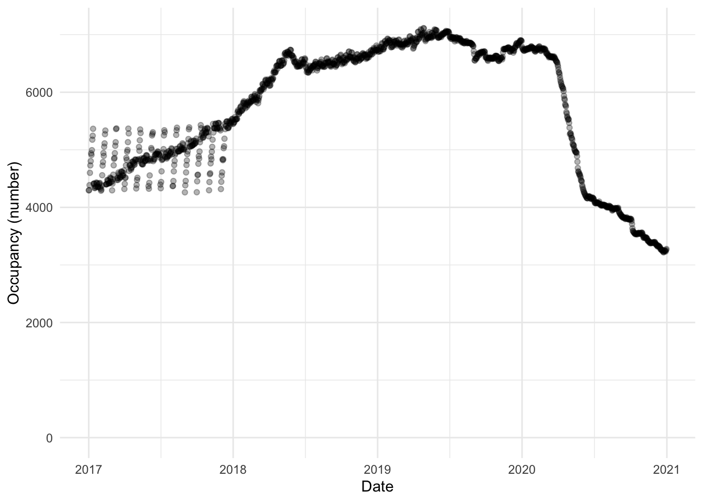
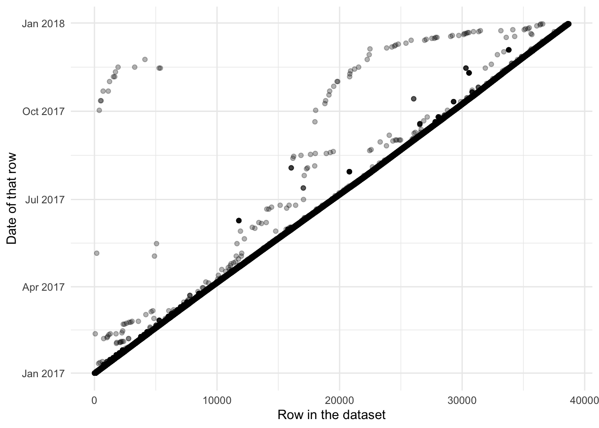
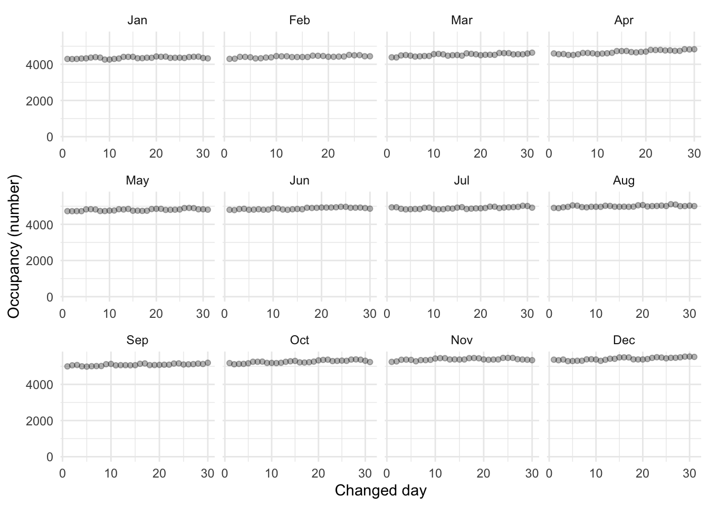
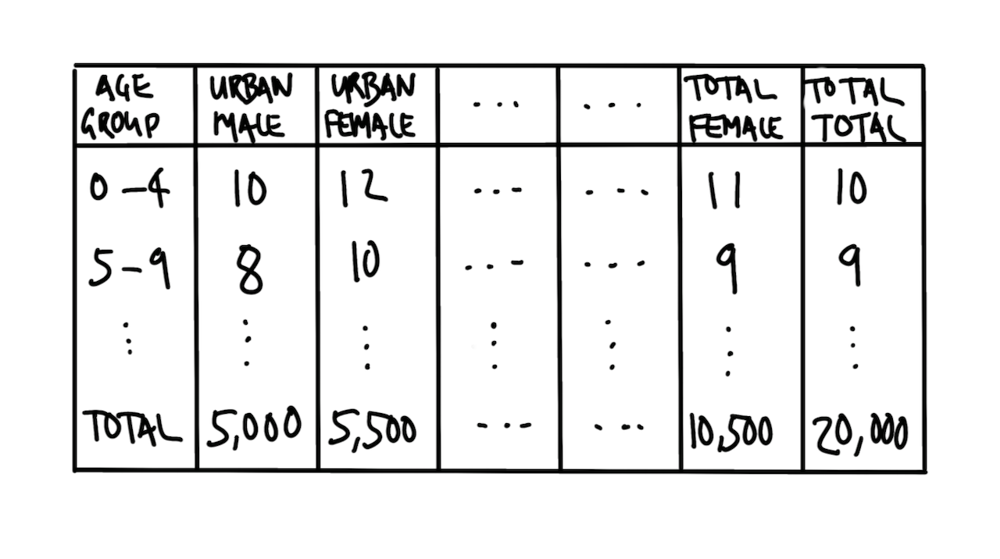
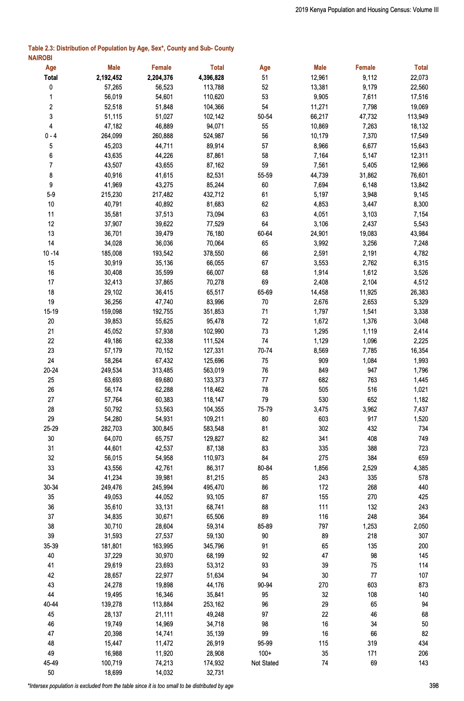
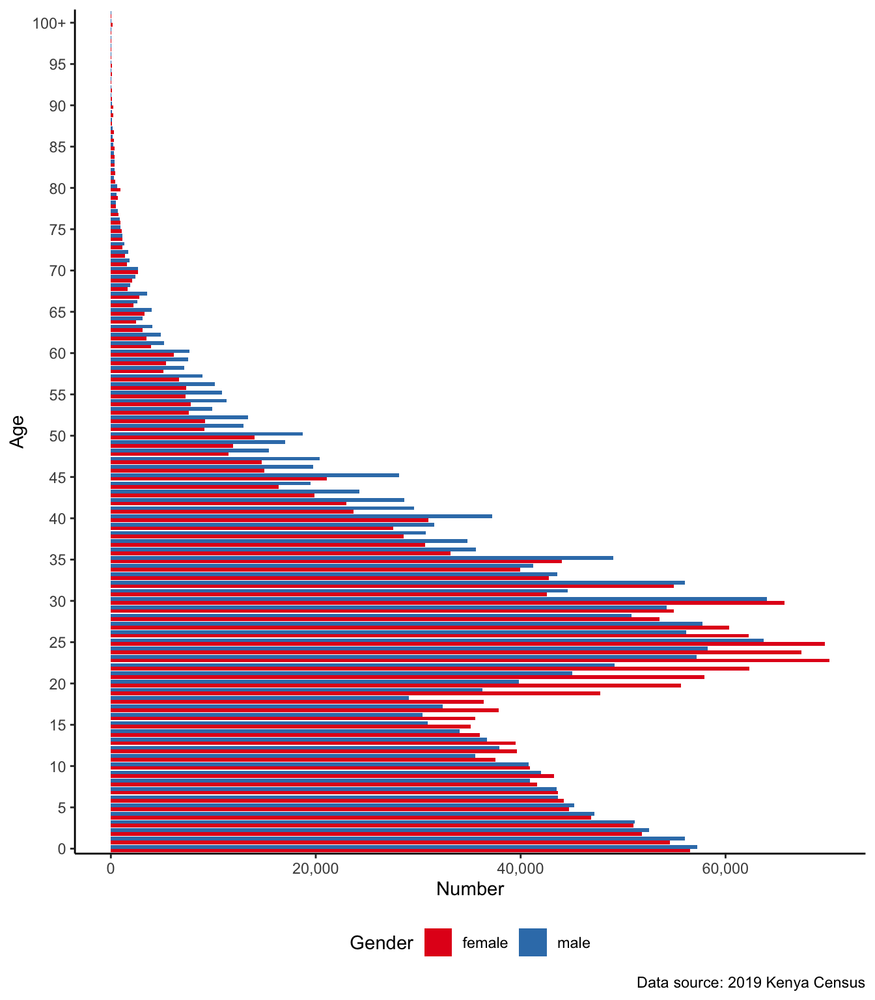

library(janitor)
library(knitr)
library(lubridate)
library(modelsummary)
library(opendatatoronto)
library(pdftools)
library(pointblank)
library(readxl)
library(scales)
library(stringi)
library(testthat)
library(tidyverse)
library(validate)9 Clean and prepare
Prerequisites
- Read Data Feminism, (D’Ignazio and Klein 2020)
- Focus on Chapter 5 “Unicorns, Janitors, Ninjas, Wizards, and Rock Stars”, which discusses the importance of considering different sources of data about the same process.
- Read R for Data Science, (Wickham, Çetinkaya-Rundel, and Grolemund [2016] 2023)
- Focus on Chapter 6 “Data tidying”, which provides an overview of tidy data and some strategies to obtain it.
- Read An introduction to data cleaning with R, (De Jonge and van der Loo 2013)
- Focus on Chapter 2 “From raw data to technically correct data”, which provides detailed information about reading data into R and various classes.
- Read What The Washington Post Elections Engineering team had to learn about election data (Liu, Bronner, and Bowers 2022)
- Details several practical issues about real-world datasets.
- Read Column Names as Contracts, (Riederer 2020)
- Introduces the benefits of having a limited vocabulary for naming variables.
- Read Combining Statistical, Physical, and Historical Evidence to Improve Historical Sea-Surface Temperature Records, (Chan 2021)
- Details the difficulty of creating a dataset of temperatures from observations taken by different ships at different times.
Key concepts and skills
- Cleaning and preparing a dataset is difficult work that involves making many decisions. Planning an endpoint and simulating the dataset that we would like to end up with are key elements of cleaning and preparing data.
- It can help to work in an iterative way, beginning with a small sample of the dataset. Write code to fix some aspect, and then iterate and generalize to additional tranches.
- During that process we should also develop a series of tests and checks that the dataset should pass. This should focus on key features that we would expect of the dataset.
- We should be especially concerned about the class of variables, having clear names, and that the unique values of each variable are as expected given all this.
Software and packages
- Base R (R Core Team 2023)
janitor(Firke 2023)knitr(Xie 2023)lubridate(Grolemund and Wickham 2011)modelsummary(Arel-Bundock 2022)opendatatoronto(Gelfand 2022)pdftools(Ooms 2022)pointblank(Iannone and Vargas 2022)readxl(Wickham and Bryan 2023)scales(Wickham and Seidel 2022)stringi(Gagolewski 2022)testthat(Wickham 2011)tidyverse(Wickham et al. 2019)validate(van der Loo and De Jonge 2021)
9.1 Introduction
“Well, Lyndon, you may be right and they may be every bit as intelligent as you say,” said Rayburn, “but I’d feel a whole lot better about them if just one of them had run for sheriff once.”
Sam Rayburn reacting to Lyndon Johnson’s enthusiasm about John Kennedy’s incoming cabinet, as quoted in The Best and the Brightest (Halberstam 1972, 41).
In this chapter we put in place more formal approaches for data cleaning and preparation. These are centered around:
- validity;
- internal consistency; and
- external consistency.
Your model does not care whether you validated your data, but you should. Validity means that the values in the dataset are not obviously wrong. For instance, with few exceptions, currencies should not have letters in them, names should not have numbers, and velocities should not be faster than the speed of light. Internal consistency means the dataset does not contradict itself. For instance, that might mean that constituent columns add to the total column. External consistency means that the dataset does not, in general, contradict outside sources, and is deliberate when it does. For instance, if our dataset purports to be about the population of cities, then we would expect that they are the same as, to a rough approximation, say, those available from relevant censuses on Wikipedia.
SpaceX, the United States rocket company, uses cycles of ten or 50 Hertz (equivalent to 0.1 and 0.02 seconds, respectively) to control their rockets. Each cycle, the inputs from sensors, such as temperature and pressure, are read, processed, and used to make a decision, such as whether to adjust some setting (Martin and Popper 2021). We recommend a similar iterative approach of small adjustments during data cleaning and preparation. Rather than trying to make everything perfect from the start, just get started, and iterate through a process of small, continuous improvements.
To a large extent, the role of data cleaning and preparation is so great that the only people that understand a dataset are those that have cleaned it. Yet, the paradox of data cleaning is that often those that do the cleaning and preparation are those that have the least trust in the resulting dataset. At some point in every data science workflow, those doing the modeling should do some data cleaning. Even though few want to do it (Sambasivan et al. 2021), it can be as influential as modeling. To clean and prepare data is to make many decisions, some of which may have important effects on our results. For instance, Northcutt, Athalye, and Mueller (2021) find the test sets of some popular datasets in computer science contain, on average, labels that are wrong in around three per cent of cases. Banes et al. (2022) re-visit the Sumatran orang-utan (Pongo abelii) reference genome and find that nine of the ten samples had some issue. And Du, Huddart, and Jiang (2022) find a substantial difference between the as-filed and standardized versions of a company’s accounting data, especially for complex financial situations. Like Sam Rayburn wishing that Kennedy’s cabinet despite their intelligence, had experience in the nitty-gritty, a data scientist needs to immerse themselves in the messy reality of their dataset.
The reproducibility crisis, which was identified early in psychology (Open Science Collaboration 2015) but since extended to many other disciplines in the physical and social sciences, brought to light issues such as p-value “hacking”, researcher degrees of freedom, file-drawer issues, and even data and results fabrication (Gelman and Loken 2013). Steps are now being put in place to address these. But there has been relatively little focus on the data gathering, cleaning, and preparation aspects of applied statistics, despite evidence that decisions made during these steps greatly affect statistical results (Huntington-Klein et al. 2021). In this chapter we focus on these issues.
While the statistical practices that underpin data science are themselves correct and robust when applied to simulated datasets, data science is not typically conducted with data that follow the assumptions underlying the models that are commonly fit. For instance, data scientists are interested in “messy, unfiltered, and possibly unclean data—tainted by heteroskedasticity, complex dependence and missingness patterns—that until recently were avoided in polite conversations between more traditional statisticians” (Craiu 2019). Big data does not resolve this issue and may even exacerbate it. For instance, population inference based on larger amounts of poor-quality data, without adjusting for data issues, will just lead to more confidently wrong conclusions (Meng 2018). The problems that are found in much of applied statistics research are not necessarily associated with researcher quality, or their biases (Silberzahn et al. 2018). Instead, they are a result of the context within which data science is conducted. This chapter provides an approach and tools to explicitly think about this work.
Gelman and Vehtari (2021), writing about the most important statistical ideas of the past 50 years, say that each of them enabled new ways of thinking about data analysis. These ideas brought into the tent of statistics, approaches that “had been considered more a matter of taste or philosophy”. The focus on data cleaning and preparation in this chapter is analogous, insofar as it represents a codification, or bringing inside the tent, of aspects that are typically, incorrectly, considered those of taste rather than core statistical concerns.
The workflow for data cleaning and preparation that we advocate is:
- Save the original, unedited data.
- Begin with an end in mind by sketching and simulating.
- Write tests and documentation.
- Execute the plan on a small sample.
- Iterate the plan.
- Generalize the execution.
- Update tests and documentation.
We will need a variety of skills to be effective, but this is the very stuff of data science. The approach needed is some combination of dogged and sensible. Perfect is very much the enemy of good enough when it comes to data cleaning. And to be specific, it is better to have 90 per cent of the data cleaned and prepared, and to start exploring that, before deciding whether it is worth the effort to clean and prepare the remaining 10 per cent. Because that remainder will likely take an awful lot of time and effort.
All data regardless of whether they were obtained from farming, gathering, or hunting, will have issues. We need approaches that can deal with a variety of concerns, and more importantly, understand how they might affect our modeling (Van den Broeck et al. 2005). To clean data is to analyze data. This is because the process forces us to make choices about what we value in our results (Au 2020).
9.2 Workflow
9.2.1 Save the original, unedited data
The first step is to save the original, unedited data into a separate, local folder. The original, unedited data establishes the foundation for reproducibility (Wilson et al. 2017). If we obtained our data from a third-party, such as a government website, then we have no control over whether they will continue to host that data, update it, or change the address at which it is available. Saving a local copy also reduces the burden that we impose on their servers.
Having locally saved the original, unedited data we must maintain a copy of it in that state, and not modify it. As we begin to clean and prepare it, we instead make these changes to a copy of the dataset. Maintaining the original, unedited dataset, and using scripts to create the dataset that we are interested in analyzing, ensures that our entire workflow is reproducible. It may be that the changes that we decide to make today, are not ones that we would make tomorrow, having learnt more about the dataset. We need to ensure that we have that data in the original, unedited state in case we need to return to it (Borer et al. 2009).
We may not always be allowed to share that original, unedited data, but we can almost always create something similar. For instance, if we are using a restricted-use computer, then it may be that the best we can do is create a simulated version of the original, unedited data that conveys the main features, and include detailed access instructions in a README file.
9.2.2 Plan
Planning the endpoint forces us to begin with an end in mind and is important for a variety of reasons. As with scraping data, introduced in Chapter 7, it helps us to be proactive about scope-creep. But with data cleaning it additionally forces us to really think about what we want the final dataset to look like.
The first step is to sketch the dataset that we are interested in. The key features of the sketch will be aspects such as the names of the columns, their class, and the possible range of values. For instance, we might be interested in the populations of US states. Our sketch might look like Figure 9.1.

In this case, the sketch forces us to decide that we want full names rather than abbreviations for the state names, and the population to be measured in millions. The process of sketching this endpoint has forced us to make decisions early on and be clear about our desired endpoint.
We then implement that using code to simulate data. Again, this process forces us to think about what reasonable values look like in our dataset because we must decide which functions to use. We need to think carefully about the unique values of each variable. For instance, if the variable is meant to be “gender” then unique values such as “male”, “female”, “other”, and “unknown” may be expected, but a number such as “1,000” would likely be wrong. It also forces us to be explicit about names because we must assign the output of those functions to a variable. For instance, we could simulate some population data for the US states.
set.seed(853)
simulated_population <-
tibble(
state = state.name,
population = runif(n = 50, min = 0, max = 50) |>
round(digits = 2)
)
simulated_population# A tibble: 50 × 2
state population
<chr> <dbl>
1 Alabama 18.0
2 Alaska 6.01
3 Arizona 24.2
4 Arkansas 15.8
5 California 1.87
6 Colorado 20.2
7 Connecticut 6.54
8 Delaware 12.1
9 Florida 7.9
10 Georgia 9.44
# ℹ 40 more rowsOur purpose, during data cleaning and preparation, is to then bring our original, unedited data close to that plan. Ideally, we would plan so that the desired endpoint of our dataset is “tidy data”. This is introduced in Online Appendix A, but briefly, it means that (Wickham, Çetinkaya-Rundel, and Grolemund [2016] 2023; Wickham 2014, 4):
- each variable is in its own column;
- each observation is in its own row; and
- each value is in its own cell.
Begin thinking about validity and internal consistency at this stage. What are some of the features that these data should have? Note these as you go through the process of simulating the dataset because we will draw on them to write tests.
9.2.3 Start small
Having thoroughly planned we can turn to the original, unedited data that we are dealing with. Usually we want to manipulate the original, unedited data into a rectangular dataset as quickly as possible. This allows us to use familiar functions from the tidyverse. For instance, let us assume that we are starting with a .txt file.
The first step is to look for regularities in the dataset. We want to end up with tabular data, which means that we need some type of delimiter to distinguish different columns. Ideally this might be features such as a comma, a semicolon, a tab, a double space, or a line break. In the following case we could take advantage of the comma.
Alabama, 5
Alaska, 0.7
Arizona, 7
Arkansas, 3
California, 40In more challenging cases there may be some regular feature of the dataset that we can take advantage of. Sometimes various text is repeated, as in the following case.
State is Alabama and population is 5 million.
State is Alaska and population is 0.7 million.
State is Arizona and population is 7 million.
State is Arkansas and population is 3 million.
State is California and population is 40 million.In this case, although we do not have a traditional delimiter, we can use the regularity of “State is”, “and population is”, and “million” to get what we need. A more difficult case is when we do not have line breaks. This final case is illustrative of that.
Alabama 5 Alaska 0.7 Arizona 7 Arkansas 3 California 40One way to approach this is to take advantage of the different classes and values that we are looking for. For instance, we know that we are after US states, so there are only 50 possible options (setting D.C. to one side for the time being), and we could use the these as a delimiter. We could also use the fact that population is a number, and so separate based on a space followed by a number.
We will now convert this final case into tidy data.
unedited_data <-
c("Alabama 5 Alaska 0.7 Arizona 7 Arkansas 3 California 40")
tidy_data <-
tibble(raw = unedited_data) |>
separate(
col = raw,
into = letters[1:5],
sep = "(?<=[[:digit:]]) " # A bracket preceded by numbers
) |>
pivot_longer(
cols = letters[1:5],
names_to = "drop_me",
values_to = "separate_me"
) |>
separate(
col = separate_me,
into = c("state", "population"),
sep = " (?=[[:digit:]])" # A space followed by a number
) |>
select(-drop_me)
tidy_data# A tibble: 5 × 2
state population
<chr> <chr>
1 Alabama 5
2 Alaska 0.7
3 Arizona 7
4 Arkansas 3
5 California 40 9.2.4 Write tests and documentation
Having established a rectangular dataset, albeit a messy one, we should begin to look at the classes that we have. We do not necessarily want to fix the classes at this point, because that can result in lost data. But we look at the class to see what it is, compare it to our simulated dataset, and note the columns where it is different to see what changes need to be made. Background on class() is available in Online Appendix A.
Before changing the class and before going on to more bespoke issues, we should deal with some common issues including:
- Commas and other punctuation, such as denomination signs ($, €, £, etc.), in variables that should be numeric.
- Inconsistent formatting of dates, such as “December” and “Dec” and “12” all in the one variable.
- Unexpected character encoding, especially in Unicode, which may not display consistently.1
Typically, we want to fix anything immediately obvious. For instance, we should remove commas that have been used to group digits in currencies. However, the situation will often feel overwhelming. What we need to do is to look at the unique values in each variable, and then triage what we will fix. We make the triage decision based on what is likely to have the largest impact. That usually means creating counts of the observations, sorting them in descending order, and then dealing with them in this order.
When the tests of membership are passed—which we initially establish based on simulation and experience—then we can change the class, and run all the tests again. We have adapted this idea from the software development approach of unit testing. Tests are crucial because they enable us to understand whether software (or in this case data) is fit for our purpose (Irving et al. 2021). Tests, especially in data science, are not static things that we just write once and then forget. Instead they should update and evolve as needed.
Oh, you think we have good data on that!
The simplification of reality can be especially seen in sports records, which necessarily must choose what to record. Sports records are fit for some purposes and not for others. For instance, chess is played on an 8 x 8 board of alternating black and white squares. The squares are detonated by a unique combination of both a letter (A-G) and a number (1-8). Most pieces have a unique abbreviation, for instance knights are N and bishops are B. Each game is independently recorded using this “algebraic notation” by each player. These records allow us to recreate the moves of the game. The 2021 Chess World Championship was contested by Magnus Carlsen and Ian Nepomniachtchi. There were a variety of reasons this game was particularly noteworthy—including it being the longest world championship game—but one is the uncharacteristic mistakes that both Carlsen and Nepomniachtchi made. For instance, at Move 33 Carlsen did not exploit an opportunity; and at Move 36 a different move would have provided Nepomniachtchi with a promising endgame (Doggers 2021). One reason for these mistakes may have been that both players at that point in the game had very little time remaining—they had to decide on their moves very quickly. But there is no sense of that in the representation provided by the game sheet because it does not record time remaining. The record is fit for purpose as a “correct” representation of what happened in the game; but not necessarily why it happened.
Let us run through an example with a collection of strings, some of which are slightly wrong. This type of output is typical of OCR, introduced in Chapter 7, which often gets most of the way there, but not quite.
messy_string <- paste(
c("Patricia, Ptricia, PatricIa, Patric1a, PatricIa"),
c("PatrIcia, Patricia, Patricia, Patricia , 8atricia"),
sep = ", "
)As before, we first get this into a rectangular dataset.
messy_dataset <-
tibble(names = messy_string) |>
separate_rows(names, sep = ", ")
messy_dataset# A tibble: 10 × 1
names
<chr>
1 "Patricia"
2 "Ptricia"
3 "PatricIa"
4 "Patric1a"
5 "PatricIa"
6 "PatrIcia"
7 "Patricia"
8 "Patricia"
9 "Patricia "
10 "8atricia" We now need to decide which of these errors we are going to fix. To help us decide which are most important, we create a count.
messy_dataset |>
count(names, sort = TRUE)# A tibble: 7 × 2
names n
<chr> <int>
1 "Patricia" 3
2 "PatricIa" 2
3 "8atricia" 1
4 "PatrIcia" 1
5 "Patric1a" 1
6 "Patricia " 1
7 "Ptricia" 1The most common unique observation is the correct one. The next one—“PatricIa”—looks like the “i” has been incorrectly capitalized. This is true for “PatrIcia” as well. We can fix the capitalization issues with str_to_title(), which converts the first letter of each word in a string to uppercase and the rest to lowercase, and then redo the count.
Background on strings is available in Online Appendix A.
messy_dataset_fix_I_8 <-
messy_dataset |>
mutate(
names = str_to_title(names)
)
messy_dataset_fix_I_8 |>
count(names, sort = TRUE)# A tibble: 5 × 2
names n
<chr> <int>
1 "Patricia" 6
2 "8atricia" 1
3 "Patric1a" 1
4 "Patricia " 1
5 "Ptricia" 1Already this is much better with 60 per cent of the values are correct, compared with the earlier 30 per cent. There are two more clear errors—“8tricia” and “Ptricia”—with the first distinguished by an “8” instead of a “P”, and the second missing an “a”. We can fix these issues with str_replace_all().
messy_dataset_fix_a_n <-
messy_dataset_fix_I_8 |>
mutate(
names = str_replace_all(names, "8atricia", "Patricia"),
names = str_replace_all(names, "Ptricia", "Patricia")
)
messy_dataset_fix_a_n |>
count(names, sort = TRUE)# A tibble: 3 × 2
names n
<chr> <int>
1 "Patricia" 8
2 "Patric1a" 1
3 "Patricia " 1We have achieved an 80 per cent outcome with not too much effort. The final two issues are more subtle. The first has occurred because the “i” has been incorrectly coded as a “1”. In some fonts this will show up, but in others it will be more difficult to see. This is a common issue, especially with OCR, and something to be aware of. The second occurs because of a trailing space. Trailing and leading spaces are another common issue and we can address them with str_trim(). After we fix these two remaining issues we have all entries corrected.
cleaned_data <-
messy_dataset_fix_a_n |>
mutate(
names = str_replace_all(names, "Patric1a", "Patricia"),
names = str_trim(names, side = c("right"))
)
cleaned_data |>
count(names, sort = TRUE)# A tibble: 1 × 2
names n
<chr> <int>
1 Patricia 10We have been doing the tests in our head in this example. We know that we are hoping for “Patricia”. But we can start to document this test as well. One way is to look to see if values other than “Patricia” exist in the dataset.
check_me <-
cleaned_data |>
filter(names != "Patricia")
if (nrow(check_me) > 0) {
print("Still have values that are not Patricia!")
}We can make things a little more imposing by stopping our code execution if the condition is not met with stopifnot(). To use this function we define a condition that we would like met. We could implement this type of check throughout our code. For instance if we expected there to be a certain number of observations in the dataset, or for a certain variable to have various properties, such as being an integer or a factor.
stopifnot(nrow(check_me) == 0)We can use stopifnot() to ensure that our script is working as expected as it runs.
Another way to write tests for our dataset is to use testthat. Although developed for testing packages, we can use the functionality to test our datasets. For instance, we can use expect_length() to check the length of a dataset and expect_equal() to check the content.
# Is the dataset of length one?
expect_length(check_me, 1)
# Are the observations characters?
expect_equal(class(cleaned_data$names), "character")
# Is every unique observation "Patricia"?
expect_equal(unique(cleaned_data$names), "Patricia") If the tests pass then nothing happens, but if the tests fail then the script will stop.
What do we test? It is a difficult problem, and we detail a range of more-specific tests in the next section. But broadly we test what we have, against what we expect. The engineers working on the software for the Apollo program in the 1960s initially considered writing tests to be “busy work” (Mindell 2008, 170). But they eventually came to realize that NASA would not have faith that software could be used to send men to the moon unless it was accompanied by a comprehensive suite of tests. And it is the same for data science.
Start with tests for validity. These will typically check the class of the variables, their unique values, and the number of observations. For instance, if we were using a recent dataset then columns that are years could be tested to ensure that all elements have four digits and start with a “2”. Baumgartner (2021) describes this as tests on the schema.
After that, turn to checks of internal consistency. For instance, if there are variables of different numeric responses, then check that the sum of those equals a total variable, or if it does not then this difference is explainable. Finally, turn to tests for external consistency. Here we want to use outside information to inform our tests. For instance, if we had a variable of the neonatal mortality rate (NMR) for Germany (this concept was introduced in Chapter 2), then we could look at the estimates from the World Health Organization (WHO), and ensure our NMR variable aligns. Experienced analysts do this all in their head. The issue is that it does not scale, can be inconsistent, and overloads on reputation. We return to this issue in Chapter 12 in the context of modeling.
We write tests throughout our code, rather than right at the end. In particular, using stopifnot() statements on intermediate steps ensures that the dataset is being cleaned in a way that we expect. For instance, when merging two datasets we could check:
- The variable names in the datasets are unique, apart from the column/s to be used as the key/s.
- The number of observations of each type is being carried through appropriately.
- The dimensions of the dataset are not being unexpectedly changed.
9.2.5 Iterate, generalize, and update
We could now iterate the plan. In this most recent case, we started with ten entries. There is no reason that we could not increase this to 100 or even 1,000. We may need to generalize the cleaning procedures and tests. But eventually we would start to bring the dataset into some sort of order.
9.3 Checking and testing
Robert Caro, the biographer of Lyndon Johnson introduced in Chapter 4, spent years tracking down everyone connected to the 36th President of the United States. Caro and his wife Ina went so far as to live in Texas Hill Country for three years so that they could better understand where Johnson was from. When Caro heard that Johnson, as a senator, would run to the Senate from where he stayed in D.C., he ran that route multiple times himself to try to understand why Johnson was running. Caro eventually understood it only when he ran the route as the sun was rising, just as Johnson had done; it turns out that the sun hits the Senate Rotunda in a particularly inspiring way (Caro 2019, 156). This background work enabled him to uncover aspects that no one else knew. For instance, Johnson almost surely stole his first election win (Caro 2019, 116). We need to understand our data to this same extent. We want to metaphorically turn every page.
The idea of negative space is well established in design. It refers to that which surrounds the subject. Sometimes negative space is used as an effect. For instance the logo of FedEx, an American logistics company, has negative space between the E and X that creates an arrow. In a similar way, we want to be cognizant of the data that we have, and the data that we do not have (Hodgetts 2022). We are worried that the data that we do not have somehow has meaning, potentially even to the extent of changing our conclusions. When we are cleaning data, we are looking for anomalies. We are interested in values that are in the dataset that should not be, but also the opposite situation—values that should be in the dataset but are not. There are three tools that we use to identify these situations: graphs, counts, and tests.
We also use these tools to ensure that we are not changing correct observations to incorrect. Especially when our cleaning and preparation requires many steps, it may be that fixes at one stage are undone later. We use graphs, counts, and especially tests, to prevent this. The importance of these grows exponentially with the size of the dataset. Small and medium datasets are more amenable to manual inspection and other aspects that rely on the analyst, while larger datasets especially require more efficient strategies (Hand 2018).
9.3.1 Graphs
Graphs are an invaluable tool when cleaning data, because they show each observation in the dataset, potentially in relation to the other observations. They are useful for identifying when a value does not belong. For instance, if a value is expected to be numerical, but is still a character then it will not plot, and a warning will be displayed. Graphs will be especially useful for numerical data, but are still useful for text and categorical data. Let us pretend that we have a situation where we are interested in a person’s age, for some youth survey. We have the following data:
youth_survey_data <-
tibble(ages = c(
15.9, 14.9, 16.6, 15.8, 16.7, 17.9, 12.6, 11.5, 16.2, 19.5, 150
))youth_survey_data |>
ggplot(aes(x = ages)) +
geom_histogram(binwidth = 1) +
theme_minimal() +
labs(
x = "Age of respondent",
y = "Number of respondents"
)
youth_survey_data_fixed |>
ggplot(aes(x = ages)) +
geom_histogram(binwidth = 1) +
theme_minimal() +
labs(
x = "Age of respondent",
y = "Number of respondents"
)

Figure 9.2 (a) shows an unexpected value of 150. The most likely explanation is that the data were incorrectly entered, missing the decimal place, and should be 15.0. We could fix that, document it, and then redo the graph, which would show that everything seemed more valid (Figure 9.2 (b)).
9.3.2 Counts
We want to focus on getting most of the data right, so we are interested in the counts of unique values. Hopefully most of the data are concentrated in the most common counts. But it can also be useful to invert it and see what is especially uncommon. The extent to which we want to deal with these depends on what we need. Ultimately, each time we fix one we are getting very few additional observations, potentially even just one. Counts are especially useful with text or categorical data but can be helpful with numerical data as well.
Let us see an example of text data, each of which is meant to be “Australia”.
australian_names_data <-
tibble(
country = c(
"Australie", "Austrelia", "Australie", "Australie", "Aeustralia",
"Austraia", "Australia", "Australia", "Australia", "Australia"
)
)
australian_names_data |>
count(country, sort = TRUE)# A tibble: 5 × 2
country n
<chr> <int>
1 Australia 4
2 Australie 3
3 Aeustralia 1
4 Austraia 1
5 Austrelia 1The use of this count identifies where we should spend our time: changing “Australie” to “Australia” would almost double the amount of usable data.
Turning, briefly to numeric data, Preece (1981) recommends plotting counts of the final digit of each observation in a variable. For instance, if the observations of the variable were “41.2”, “80.3”, “20.7”, “1.2”, “46.5”, “96.2”, “32.7”, “44.3”, “5.1”, and “49.0”. Then we note that 0, 1 and 5 all occur once, 3 and 7 occur twice, and 2 occurs three times. We might expect that there should be a uniform distribution of these final digits. But that is surprisingly often not the case, and the ways in which it differs can be informative. For instance, it may be that data were rounded, or recorded by different collectors.
For instance, later in this chapter we will gather, clean, and prepare some data from the 2019 Kenyan census. We pre-emptively use that dataset here and look at the count of the final digits of the ages. That is, say, from age 35 we take “5”, from age 74, we take “4”. Table 9.1 shows the expected age-heaping that occurs because some respondents reply to questions about age with a value to the closest 5 or 10. If we had an age variable without that pattern then we might expect it had been constructed from a different type of question.
| Final digit of age | Number of times |
|---|---|
| 0 | 347,233 |
| 1 | 278,930 |
| 2 | 308,933 |
| 3 | 285,745 |
| 4 | 270,355 |
| 5 | 303,817 |
| 6 | 246,582 |
| 7 | 242,688 |
| 8 | 207,739 |
| 9 | 216,355 |
9.3.3 Tests
As we said in Chapter 3, if you write code, then you are a programmer, but there is a difference between someone coding for fun, and, say, writing the code that runs the James Webb Telescope. Following Weinberg (1971, 122), we can distinguish between amateurs and professionals based the existence of subsequent users. When you first start out coding, you typically write code that only you will use. For instance, you may write some code for a class paper. After you get a grade, then in most cases, the code will not be run again. In contrast, a professional writes code for, and often with, other people.
Much academic research these days relies on code. If that research is to contribute to lasting knowledge, then the code that underpins it is being written for others and must work for others well after the researcher has moved to other projects. A professional places appropriate care on tasks that ensure code can be considered by others. A large part of that is tests.
Jet Propulsion Laboratory (2009, 14) claim that analysis after the fact “often find at least one defect per one hundred lines of code written”. There is no reason to believe that code without tests is free of defects, just that they are not known. As such, we should strive to include tests in our code when possible. There is some infrastructure for testing data science code. For instance, in Python there is the Test-Driven Data Analysis library of Radcliffe (2023), but more is needed.
Some things are so important that we require that the cleaned dataset have them. These are conditions that we should check. They would typically come from experience, expert knowledge, or the planning and simulation stages. For instance, there should be no negative numbers in an age variable, and few ages above 110. For these we could specifically require that the condition is met. Another example is when doing cross-country analysis, a list of country names that we know should be in our dataset would be useful. Our test would then be that there were:
- values not in that list that were in our dataset, or vice versa; and
- countries that we expected to be in our dataset that were not.
To have a concrete example, let us consider if we were doing some analysis about the five largest counties in Kenya. From looking it up, we find these are: “Nairobi”, “Kiambu”, “Nakuru”, “Kakamega”, and “Bungoma”. We can create that variable.
correct_kenya_counties <-
c(
"Nairobi", "Kiambu", "Nakuru", "Kakamega", "Bungoma"
)Then pretend we have the following dataset, which contains errors.
top_five_kenya <-
tibble(county = c(
"Nairobi", "Nairob1", "Nakuru", "Kakamega", "Nakuru",
"Kiambu", "Kiambru", "Kabamega", "Bun8oma", "Bungoma"
))
top_five_kenya |>
count(county, sort = TRUE)# A tibble: 9 × 2
county n
<chr> <int>
1 Nakuru 2
2 Bun8oma 1
3 Bungoma 1
4 Kabamega 1
5 Kakamega 1
6 Kiambru 1
7 Kiambu 1
8 Nairob1 1
9 Nairobi 1Based on the count we know that we must fix some of them. There are two with numbers in the names.
top_five_kenya_fixed_1_8 <-
top_five_kenya |>
mutate(
county = str_replace_all(county, "Nairob1", "Nairobi"),
county = str_replace_all(county, "Bun8oma", "Bungoma")
)
top_five_kenya_fixed_1_8 |>
count(county, sort = TRUE)# A tibble: 7 × 2
county n
<chr> <int>
1 Bungoma 2
2 Nairobi 2
3 Nakuru 2
4 Kabamega 1
5 Kakamega 1
6 Kiambru 1
7 Kiambu 1At this point we can compare this with our known correct variable. We check both ways, i.e. is there anything in the correct variable not in our dataset, and is there anything in the dataset not in our correct variable. We use our check conditions to decide whether we are finished.
if (all(top_five_kenya_fixed_1_8$county |>
unique() %in% correct_kenya_counties)) {
"The cleaned counties match the expected countries"
} else {
"Not all of the counties have been cleaned completely"
}[1] "Not all of the counties have been cleaned completely"if (all(correct_kenya_counties %in% top_five_kenya_fixed_1_8$county |>
unique())) {
"The expected countries are in the cleaned counties"
} else {
"Not all the expected countries are in the cleaned counties"
}[1] "The expected countries are in the cleaned counties"It is clear that we still have cleaning to do because not all the counties match what we were expecting.
9.3.3.1 Aspects to test
We will talk about explicit tests for class and dates, given their outsized importance, and how common it is for them to go wrong. But other aspects to explicitly consider testing include:
- Variables of monetary values should be tested for reasonable bounds given the situation. In some cases negative values will not be possible. Sometimes an upper bound can be identified. Monetary variables should be numeric. They should not have commas or other separators. They should not contain symbols such as currency signs or semicolons.
- Variables of population values should likely not be negative. Populations of cities should likely be somewhere between 100,000 and 50,000,000. They again should be numeric, and contain only numbers, no symbols.
- Names should be character variables. They likely do not contain numbers. They may contain some limited set of symbols, and this would be context specific.
- The number of observations is surprisingly easy to inadvertently change. While it is fine for this to happen deliberately, when it happens accidentally it can create substantial problems. The number of observations should be tested at the start of any data cleaning process against the data simulation and this expectation updated as necessary. It should be tested throughout the data cleaning process, but especially before and after any joins.
More generally, work with experts and draw on prior knowledge to work out some reasonable features for the variables of interest and then implement these. For instance, consider how Baker (2023) was able to quickly identify an error in a claim about user numbers by roughly comparing it with how many institutions in the US receive federal financial aid.
We can use validate to set up a series of tests. For instance, here we will simulate some data with clear issues.
set.seed(853)
dataset_with_issues <-
tibble(
age = c(
runif(n = 9, min = 0, max = 100) |> round(),
1000
),
gender = c(
sample(
x = c("female", "male", "other", "prefer not to disclose"),
size = 9,
replace = TRUE,
prob = c(0.4, 0.4, 0.1, 0.1)
),
"tasmania"
),
income = rexp(n = 10, rate = 0.10) |> round() |> as.character()
)
dataset_with_issues# A tibble: 10 × 3
age gender income
<dbl> <chr> <chr>
1 36 female 20
2 12 prefer not to disclose 16
3 48 male 0
4 32 female 2
5 4 female 1
6 40 female 13
7 13 female 13
8 24 female 7
9 16 male 3
10 1000 tasmania 2 In this case, there is an impossible age, one observation in the gender variable that should not be there, and finally, income is a character variable instead of a numeric. We use validator() to establish rules we expect the data to satisfy and confront() to determine whether it does.
rules <- validator(
is.numeric(age),
is.character(gender),
is.numeric(income),
age < 120,
gender %in% c("female", "male", "other", "prefer not to disclose")
)
out <-
confront(dataset_with_issues, rules)
summary(out) name items passes fails nNA error warning
1 V1 1 1 0 0 FALSE FALSE
2 V2 1 1 0 0 FALSE FALSE
3 V3 1 0 1 0 FALSE FALSE
4 V4 10 9 1 0 FALSE FALSE
5 V5 10 9 1 0 FALSE FALSE
expression
1 is.numeric(age)
2 is.character(gender)
3 is.numeric(income)
4 age < 120
5 gender %vin% c("female", "male", "other", "prefer not to disclose")In this case, we can see that there are issues with the final three rules that we established. More generally, van der Loo (2022) provides many example tests that can be used.
As mentioned in Chapter 6, gender is something that we need to be especially careful about. We will typically have a small number of responses that are neither “male” or “female”. The correct way to deal with the situation depends on context. But if responses other than “male” or “female” are going to be removed from the dataset and ignored, because there are too few of them, showing respect for the respondent might mean including a brief discussion of how they were similar or different to the rest of the dataset. Plots and a more extensive discussion could then be included in an appendix.
9.3.3.2 Class
It is sometimes said that Americans are obsessed with money, while the English are obsessed with class. In the case of data cleaning and preparation we need to be English. Class is critical and worthy of special attention. We introduce class in Online Appendix A and here we focus on “numeric”, “character”, and “factor”. Explicit checks of the class of variables are essential. Accidentally assigning the wrong class to a variable can have a large effect on subsequent analysis. It is important to:
- check whether some value should be a number or a factor; and
- check that values are numbers not characters.
To understand why it is important to be clear about whether a value is a number or a factor, consider the following situation:
simulated_class_data <-
tibble(
response = c(1, 1, 0, 1, 0, 1, 1, 0, 0),
group = c(1, 2, 1, 1, 2, 3, 1, 2, 3)
) |>
mutate(
group_as_integer = as.integer(group),
group_as_factor = as.factor(group),
)We use logistic regression, which we cover in more detail in Chapter 12, and first include “group” as an integer, then we include it as a factor. Table 9.2 shows how different the results are and highlights the importance of getting the class of variables used in regression right. In the former, where group is an integer, we impose a consistent relationship between the different levels of the observations, whereas in the latter, where it is a factor, we enable more freedom.
models <- list(
"Group as integer" = glm(
response ~ group_as_integer,
data = simulated_class_data,
family = "binomial"
),
"Group as factor" = glm(
response ~ group_as_factor,
data = simulated_class_data,
family = "binomial"
)
)
modelsummary(models)| Group as integer | Group as factor | |
|---|---|---|
| (Intercept) | 1.417 | 1.099 |
| (1.755) | (1.155) | |
| group_as_integer | -0.666 | |
| (0.894) | ||
| group_as_factor2 | -1.792 | |
| (1.683) | ||
| group_as_factor3 | -1.099 | |
| (1.826) | ||
| Num.Obs. | 9 | 9 |
| AIC | 15.8 | 17.1 |
| BIC | 16.2 | 17.7 |
| Log.Lik. | -5.891 | -5.545 |
| F | 0.554 | 0.579 |
| RMSE | 0.48 | 0.46 |
Class is so important, subtle, and can have such a pernicious effect on analysis, that analysis with a suite of tests that check class is easier to believe. Establishing this suite is especially valuable just before modeling, but it is worthwhile setting this up as part of data cleaning and preparation. One reason that Jane Street, the US proprietary trading firm, uses a particular programming language, OCaml, is that its type system makes it more reliable with regard to class (Somers 2015). When code matters, class is of vital concern.
There are many open questions around the effect and implications of type in computer science more generally but there has been some work. For instance, Gao, Bird, and Barr (2017) find that the use of a static type system would have caught around 15 per cent of errors in production JavaScript systems. Languages have been developed, such as Typescript, where the primary difference, in this case from JavaScript, is that they are strongly typed. Turcotte et al. (2020) examine some of the considerations for adding a type system in R. They develop a prototype that goes some way to addressing the technical issues, but acknowledge that large-scale implementation would be challenging for many reasons including the need for users to change.
To this point in this book when we have used read_csv(), and other functions for importing data, we have allowed the function to guess the class of the variables. Moving forward we will be more deliberate and instead specify it ourselves using “col_types”. For instance, instead of:
raw_igme_data <-
read_csv(
file = "https://childmortality.org/wp-content/uploads/2021/09/UNIGME-2021.csv",
show_col_types = FALSE
)We recommend using:
raw_igme_data <-
read_csv(
file = "https://childmortality.org/wp-content/uploads/2021/09/UNIGME-2021.csv",
col_select = c(`Geographic area`, TIME_PERIOD, OBS_VALUE),
col_types = cols(
`Geographic area` = col_character(),
TIME_PERIOD = col_character(),
OBS_VALUE = col_double(),
)
)This is typically an iterative process of initially reading in the dataset, getting a quick sense of it, and then reading it in properly with only the necessary columns and classes specified. While this will require a little extra work of us, it is important that we are clear about class.
9.3.3.3 Dates
A shibboleth for whether someone has worked with dates is their reaction when you tell them you are going to be working with dates. If they share a horror story, then they have likely worked with dates before!
Extensive checking of dates is important. Ideally, we would like dates to be in the following format: YYYY-MM-DD. There are differences of opinion as to what is an appropriate date format in the broader world. Reasonable people can differ on whether 1 July 2022 or July 1, 2022 is better, but YYYY-MM-DD is the international standard and we should use that in our date variables where possible.
A few tests that could be useful include:
- If a column is days of the week, then test that the only components are Monday, Tuesday, \(\dots\), Sunday. Further, test that all seven days are present. Similarly, for month.
- Test that the number of days is appropriate for each month, for instance, check that September has 30 days, etc.
- Check whether the dates are in order in the dataset. This need not necessarily be the case, but often when it is not, there are issues worth exploring.
- Check that the years are complete and appropriate to the analysis period.
In Chapter 2 we introduced a dataset of shelter usage in Toronto in 2021 using opendatatoronto. Here we examine that same dataset, but for 2017, to illustrate some issues with dates. We first need to download the data.2
toronto_shelters_2017 <-
search_packages("Daily Shelter Occupancy") |>
list_package_resources() |>
filter(name == "Daily shelter occupancy 2017.csv") |>
group_split(name) |>
map_dfr(get_resource, .id = "file")
write_csv(
x = toronto_shelters_2017,
file = "toronto_shelters_2017.csv"
)We need to make the names easier to type and only keep relevant columns.
toronto_shelters_2017 <-
toronto_shelters_2017 |>
clean_names() |>
select(occupancy_date, sector, occupancy, capacity)The main issue with this dataset will be the dates. We will find that the dates appear to be mostly year-month-day, but certain observations may be year-day-month. We use ymd() from lubridate to parse the date in that order.
toronto_shelters_2017 <-
toronto_shelters_2017 |>
mutate(
# remove times
occupancy_date =
str_remove(
occupancy_date,
"T[:digit:]{2}:[:digit:]{2}:[:digit:]{2}"
)) |>
mutate(generated_date = ymd(occupancy_date, quiet = TRUE))
toronto_shelters_2017# A tibble: 38,700 × 5
occupancy_date sector occupancy capacity generated_date
<chr> <chr> <dbl> <dbl> <date>
1 2017-01-01 Co-ed 16 16 2017-01-01
2 2017-01-01 Men 13 17 2017-01-01
3 2017-01-01 Men 63 63 2017-01-01
4 2017-01-01 Families 66 70 2017-01-01
5 2017-01-01 Men 58 60 2017-01-01
6 2017-01-01 Families 168 160 2017-01-01
7 2017-01-01 Families 119 150 2017-01-01
8 2017-01-01 Men 23 28 2017-01-01
9 2017-01-01 Families 8 0 2017-01-01
10 2017-01-01 Co-ed 14 40 2017-01-01
# ℹ 38,690 more rowsThe plot of the distribution of what purports to be the day component makes it clear that there are concerns (Figure 9.3 (a)). In particular we are concerned that the distribution of the days is not roughly uniform.
toronto_shelters_2017 |>
separate(
generated_date,
into = c("one", "two", "three"),
sep = "-",
remove = FALSE
) |>
count(three) |>
ggplot(aes(x = three, y = n)) +
geom_point() +
theme_minimal() +
labs(x = "Third component of occupancy date",
y = "Number")
toronto_shelters_2017 |>
mutate(row_number = c(seq_len(nrow(toronto_shelters_2017)))) |>
ggplot(aes(x = row_number, y = generated_date), alpha = 0.1) +
geom_point(alpha = 0.3) +
theme_minimal() +
labs(
x = "Row number",
y = "Date"
)

As mentioned, one graph that is especially useful when cleaning a dataset is the order the observations appear in the dataset. For instance, we would generally expect that there would be a rough ordering in terms of date. To examine whether this is the case, we can graph the date variable in the order it appears in the dataset (Figure 9.3 (b)).
While this is just a quick graph it illustrates the point—there are a lot in order, but not all. If they were in order, then we would expect them to be along the diagonal. It is odd that the data are not in order, especially as there appears to be something systematic initially. We can summarize the data to get a count of occupancy by day.
# Idea from Lisa Lendway
toronto_shelters_by_day <-
toronto_shelters_2017 |>
drop_na(occupancy, capacity) |>
summarise(
occupancy = sum(occupancy),
capacity = sum(capacity),
usage = occupancy / capacity,
.by = generated_date
)We are interested in the availability of shelter spots in Toronto for each day (Figure 9.4).
toronto_shelters_by_day |>
ggplot(aes(x = day(generated_date), y = occupancy)) +
geom_point(alpha = 0.3) +
scale_y_continuous(limits = c(0, NA)) +
labs(
color = "Type",
x = "Day",
y = "Occupancy (number)"
) +
facet_wrap(
vars(month(generated_date, label = TRUE)),
scales = "free_x"
) +
theme_minimal() +
scale_color_brewer(palette = "Set1")
It is clear there seems to be an issue with the first 12 days of the month. We noted that when we look at the data it is a bit odd that it is not in order. From Figure 9.3 (b) it looks like there are some systematic issue that affects many observations. In general, it seems that it might be the case that in the date variable the first 12 days are the wrong way around, i.e. we think it is year-month-day, but it is actually year-day-month. But there are exceptions. As a first pass, we can flip those first 12 days of each month and see if that helps. It will be fairly blunt, but hopefully gets us somewhere.
# Code by Monica Alexander
padded_1_to_12 <- sprintf("%02d", 1:12)
list_of_dates_to_flip <-
paste(2017, padded_1_to_12,
rep(padded_1_to_12, each = 12), sep = "-")
toronto_shelters_2017_flip <-
toronto_shelters_2017 |>
mutate(
year = year(generated_date),
month = month(generated_date),
day = day(generated_date),
generated_date = as.character(generated_date),
changed_date = if_else(
generated_date %in% list_of_dates_to_flip,
paste(year, day, month, sep = "-"),
paste(year, month, day, sep = "-"),
),
changed_date = ymd(changed_date)
) |>
select(-year, -month, -day)Now let us take a look (Figure 9.5).
toronto_shelters_2017_flip |>
mutate(counter = seq_len(nrow(toronto_shelters_2017_flip))) |>
ggplot(aes(x = counter, y = changed_date)) +
geom_point(alpha = 0.3) +
labs(x = "Row in the dataset",
y = "Date of that row") +
theme_minimal()
toronto_shelters_2017_flip |>
drop_na(occupancy, capacity) |>
summarise(occupancy = sum(occupancy),
.by = changed_date) |>
ggplot(aes(x = day(changed_date), y = occupancy)) +
geom_point(alpha = 0.3) +
scale_y_continuous(limits = c(0, NA)) +
labs(color = "Type",
x = "Changed day",
y = "Occupancy (number)") +
facet_wrap(vars(month(changed_date, label = TRUE)),
scales = "free_x") +
theme_minimal()

It has not fixed all the issues. For instance, notice there are now no entries below the diagonal (Figure 9.5 (a)). But we can see that has almost entirely taken care of the systematic differences (Figure 9.5 (b)). This is where we will leave this example.
9.4 Simulated example: running times
To provide a specific example, which we will return to in Chapter 12, consider the time it takes someone to run five kilometers (which is a little over three miles), compared with the time it takes them to run a marathon (Figure 12.2 (a)).
Here we consider “simulate” and “acquire”, focused on testing. In the simulation we specify a relationship of 8.4, as that is roughly the ratio between a five-kilometer run and the 42.2 kilometer distance of a marathon (a little over 26 miles).
set.seed(853)
num_observations <- 200
expected_relationship <- 8.4
fast_time <- 15
good_time <- 30
sim_run_data <-
tibble(
five_km_time =
runif(n = num_observations, min = fast_time, max = good_time),
noise = rnorm(n = num_observations, mean = 0, sd = 20),
marathon_time = five_km_time * expected_relationship + noise
) |>
mutate(
five_km_time = round(x = five_km_time, digits = 1),
marathon_time = round(x = marathon_time, digits = 1)
) |>
select(-noise)
sim_run_data# A tibble: 200 × 2
five_km_time marathon_time
<dbl> <dbl>
1 20.4 164.
2 16.8 158
3 22.3 196.
4 19.7 160.
5 15.6 121.
6 21.1 178.
7 17 157.
8 18.6 169.
9 17.4 150.
10 17.8 126.
# ℹ 190 more rowsWe can use our simulation to put in place various tests that we would want the actual data to satisfy. For instance, we want the class of the five kilometer and marathon run times to be numeric. And we want 200 observations.
stopifnot(
class(sim_run_data$marathon_time) == "numeric",
class(sim_run_data$five_km_time) == "numeric",
nrow(sim_run_data) == 200
)We know that any value that is less than 15 minutes or more than 30 minutes for the five-kilometer run time is likely something that needs to be followed up on.
stopifnot(
min(sim_run_data$five_km_time) >= 15,
max(sim_run_data$five_km_time) <= 30
)Based on this maximum and the simulated relationship of 8.4, we would be surprised if we found any marathon times that were substantially over \(30\times8.4=252\) minutes, after we allow for a little bit of drift, say 300 minutes. (To be clear, there is nothing wrong with taking longer than this to run a marathon, but it is just unlikely based on our simulation parameters). And we would be surprised if the world record marathon time, 121 minutes as at the start of 2023, were improved by anything more than a minute or two, say, anything faster than 118 minutes. (It will turn out that our simulated data do not satisfy this and result in a implausibly fast 88 minute marathon time, which suggests a need to improve the simulation.)
stopifnot(
min(sim_run_data$marathon_time) >= 118,
max(sim_run_data$marathon_time) <= 300
)We can then take these tests to real data. Actual survey data on the relationship between five kilometer and marathon run times are available from Vickers and Vertosick (2016). After downloading the data, which Vickers and Vertosick (2016) make available as an “Additional file”, we can focus on the variables of interest and only individuals with both a five-kilometer time and a marathon time.
vickers_data <-
read_excel("13102_2016_52_MOESM2_ESM.xlsx") |>
select(k5_ti, mf_ti) |>
drop_na()
vickers_data# A tibble: 430 × 2
k5_ti mf_ti
<dbl> <dbl>
1 1075 10295
2 1292 12292
3 1222 13452
4 893 9515
5 1050 10875
6 1603 16580
7 1457 15440
8 1256 13113
9 1572 17190
10 2575 22139
# ℹ 420 more rowsThe first thing that we notice is that our data are in seconds, whereas we were expecting them to be in minutes. This is fine. Our simulation and tests can update, or we can adjust our data. Our simulation and tests retain their value even when the data turn out to be slightly different, which they inevitably will.
In this case, we will divide by sixty, and round, to shift our data into minutes.
vickers_data <-
vickers_data |>
mutate(five_km_time = round(k5_ti / 60, 1),
marathon_time = round(mf_ti / 60, 1)
) |>
select(five_km_time, marathon_time)
vickers_data# A tibble: 430 × 2
five_km_time marathon_time
<dbl> <dbl>
1 17.9 172.
2 21.5 205.
3 20.4 224.
4 14.9 159.
5 17.5 181.
6 26.7 276.
7 24.3 257.
8 20.9 219.
9 26.2 286.
10 42.9 369
# ℹ 420 more rowsstopifnot(
class(vickers_data$marathon_time) == "numeric",
class(vickers_data$five_km_time) == "numeric",
min(vickers_data$five_km_time) >= 15,
max(vickers_data$five_km_time) <= 30,
min(vickers_data$marathon_time) >= 118,
max(vickers_data$marathon_time) <= 300
)In this case, our tests, which were written for the simulated data, identify that we have five kilometer run times that are faster that 15 minutes and longer than 30 minutes. They also identify marathon times that are longer than 300 minutes. If we were actually using this data for analysis, then our next step would be to plot the data, taking care to examine each of these points that our tests identified, and then either adjust the tests or the dataset.
9.5 Names
An improved scanning software we developed identified gene name errors in 30.9% (3,436/11,117) of articles with supplementary Excel gene lists; a figure significantly higher than previously estimated. This is due to gene names being converted not just to dates and floating-point numbers, but also to internal date format (five-digit numbers).
Abeysooriya et al. (2021)
Names matter. The land on which much of this book was written is today named Canada, but for a long time was known as Turtle Island. Similarly, there is a big rock in the center of Australia. For a long time, it was called Uluru, then it was known as Ayers Rock. Today it has a dual name that combines both. And in parts of the US South, including signage surrounding the South Carolina State House, the US Civil War is referred to as the War of Northern Aggression. In these examples, the name that is used conveys information, not only about the user, but about the circumstances. Even the British Royal Family recognizes the power of names. In 1917 they changed from the House of Saxe-Coburg and Gotha to the House of Windsor. It was felt that the former was too Germanic given World War I. Names matter in everyday life. And they matter in our code, too.
When coding, names are critical and worthy of special attention because (Hermans 2021):
- they help document our code as they are contained in the code;
- they make up a large proportion of any script;
- they are referred to a lot by others; and
- they help the reader understand what is happening in the code.
In addition to respecting the nature of the data, names need to satisfy two additional considerations:
- they need to be machine readable, and
- they need to be human readable.
9.5.1 Machine-readable
Ensuring machine-readable names can be an easier standard to meet. It usually means avoiding spaces and special characters. A space can be replaced with an underscore. For instance, we prefer “my_data” to “my data”. Avoiding spaces enables tab-completion which makes us more efficient. It also helps with reproducibility because spaces are considered differently by different operating systems.
Usually, special characters should be removed because they can be inconsistent between different computers and languages. This is especially the case with slash, backslash, asterisk, and both single, and double quotation marks. Try to avoid using those in names.
Names should also be unique within a dataset, and unique within a collection of datasets unless that particular variable is being deliberately used as a key to join different datasets. This usually means that the domain is critical for effective names, and when working as part of a team this all gets much more difficult (Hermans 2017). Names need to not only be unique, but notably different when there is a potential for confusion. For instance, for many years, the language PHP had both mysql_escape_string and mysql_real_escape_string (Somers 2015). It is easy to see how programmers may have accidentally written one when they meant the other.
An especially useful function to use to get closer to machine-readable names is clean_names() from janitor. This deals with those issues mentioned above as well as a few others.
some_bad_names <-
tibble(
"Second Name has spaces" = c(1),
"weird#symbol" = c(1),
"InCoNsIsTaNtCaPs" = c(1)
)
bad_names_made_better <-
some_bad_names |>
clean_names()
some_bad_names# A tibble: 1 × 3
`Second Name has spaces` `weird#symbol` InCoNsIsTaNtCaPs
<dbl> <dbl> <dbl>
1 1 1 1bad_names_made_better# A tibble: 1 × 3
second_name_has_spaces weird_number_symbol in_co_ns_is_ta_nt_ca_ps
<dbl> <dbl> <dbl>
1 1 1 19.5.2 Human-readable
Programs must be written for people to read, and only incidentally for machines to execute
Abelson and Sussman (1996)
In the same way that we emphasized in Chapter 4 that we write papers for the reader, here we emphasize that we write code for the reader. Human-readable names require an additional layer, and extensive consideration. Following Lockheed Martin (2005, 25), we should avoid names that only differ by the use of the letter “O”, instead of the number “0” or the letter “D”. Similarly, “S” with “5”.
We should consider other cultures and how they may interpret some of the names that we use. We also need to consider different experience levels that subsequent users of the dataset may have. This is both in terms of experience with data science, but also experience with similar datasets. For instance, a variable called “flag” is often used to signal that a variable contains data that needs to be followed up with or treated carefully in some way. An experienced analyst will know this, but a beginner will not. Try to use meaningful names wherever possible (Lin, Ali, and Wilson 2021). It has been found that shorter names may take longer to comprehend (Hofmeister, Siegmund, and Holt 2017), and so it is often useful to avoid uncommon abbreviations where possible.
Bryan (2015) recommends that file names, in particular, should consider the default ordering that a file manager will impose. This might mean adding prefixes such as “00-”, “01-”, etc to filenames (which might involve left-padding with zeros depending on the number of files). Critically it means using ISO 8601 for dates. That was introduced earlier and means that 2 December 2022 would be written “2022-12-02”. The reason for using such file names is to provide information to other people about the order of the files.
One interesting feature of R is that in certain cases partial matching on names is possible. For instance:
partial_matching_example <-
data.frame(
my_first_name = c(1, 2),
another_name = c("wow", "great")
)
partial_matching_example$my_first_name[1] 1 2partial_matching_example$my[1] 1 2This behavior is not possible within the tidyverse (for instance, if data.frame were replaced with tibble in the above code). Partial matching should rarely be used. It makes it more difficult to understand code after a break, and for others to come to it fresh.
Variable names should have a consistent structure. For instance, imposing the naming pattern verb_noun, as in read_csv(), then having one function that was noun_verb, perhaps csv_read(), would be inconsistent. That inconsistency imposes a significant cost because it makes it more difficult to remember the name of the function.
R, Python, and many of the other languages that are commonly used for data science are dynamically typed, as opposed to static typed. This means that class can be defined independently of declaring a variable. One interesting area of data science research is going partially toward static typed and understanding what that might mean. For instance, Python enabled type hints in 2014 (Boykis 2019). While not required, this goes someway to being more explicit about types.
Riederer (2020) advises using variable names as contracts. We do this by establishing a controlled vocabulary for them. In this way, we would define a set of words that we can use in names. In the controlled vocabulary of Riederer (2020) a variable could start with an abbreviation for its class, then something specific to what it pertains to, and then various details.
For instance, we could consider column names of “age” and “sex”. Following Riederer (2020) we may change these to be more informative of the class and other information. This issue is not settled, and there is not yet best practice. For instance, there are arguments against this in terms of readability.
some_names <-
tibble(
age = as.integer(c(1, 3, 35, 36)),
sex = factor(c("male", "male", "female", "male"))
)
riederer_names <-
some_names |>
rename(
integer_age_respondent = age,
factor_sex_respondent = sex
)
some_names# A tibble: 4 × 2
age sex
<int> <fct>
1 1 male
2 3 male
3 35 female
4 36 male riederer_names# A tibble: 4 × 2
integer_age_respondent factor_sex_respondent
<int> <fct>
1 1 male
2 3 male
3 35 female
4 36 male Even just trying to be a little more explicit and consistent about names throughout a project typically brings substantial benefits when we come to revisit the project later. Would a rose by any other name smell as sweet? Of course. But we call it a rose—or even better Rosa rubiginosa—because that helps others know what we are talking about, compared with, say, “red_thing”, “five_petaled_smell_nice”, “flower”, or “r_1”. It is clearer, and helps others efficiently understand.
9.6 1996 Tanzanian DHS
We will now go through the first of two examples. The Demographic and Health Surveys (DHS) play an important role in gathering data in areas where we may not have other datasets. Here we will clean and prepare a DHS table about household populations in Tanzania in 1996. As a reminder, the workflow that we advocate in this book is:
\[ \mbox{Plan}\rightarrow\mbox{Simulate}\rightarrow\mbox{Acquire}\rightarrow\mbox{Explore}\rightarrow\mbox{Share} \]
We are interested in the distribution of age-groups, gender, and urban/rural. A quick sketch might look like Figure 9.6.

We can then simulate a dataset.
set.seed(853)
age_group <- tibble(starter = 0:19) |>
mutate(lower = starter * 5, upper = starter * 5 + 4) |>
unite(string_sequence, lower, upper, sep = "-") |>
pull(string_sequence)
mean_value <- 10
simulated_tanzania_dataset <-
tibble(
age_group = age_group,
urban_male = round(rnorm(length(age_group), mean_value)),
urban_female = round(rnorm(length(age_group), mean_value)),
rural_male = round(rnorm(length(age_group), mean_value)),
rural_female = round(rnorm(length(age_group), mean_value)),
total_male = round(rnorm(length(age_group), mean_value)),
total_female = round(rnorm(length(age_group), mean_value))
) |>
mutate(
urban_total = urban_male + urban_female,
rural_total = rural_male + rural_female,
total_total = total_male + total_female
)
simulated_tanzania_dataset# A tibble: 20 × 10
age_group urban_male urban_female rural_male rural_female total_male
<chr> <dbl> <dbl> <dbl> <dbl> <dbl>
1 0-4 10 10 9 9 11
2 5-9 10 9 9 10 9
3 10-14 8 11 11 11 10
4 15-19 9 11 10 9 10
5 20-24 9 8 11 10 9
6 25-29 12 9 10 10 10
7 30-34 9 8 10 10 8
8 35-39 10 11 8 10 10
9 40-44 9 9 9 10 11
10 45-49 9 10 11 10 11
11 50-54 12 10 9 13 10
12 55-59 9 11 10 9 9
13 60-64 10 9 11 11 10
14 65-69 10 10 10 10 11
15 70-74 10 10 12 9 8
16 75-79 10 8 10 9 10
17 80-84 10 9 9 10 9
18 85-89 10 9 10 11 11
19 90-94 11 11 11 10 11
20 95-99 10 10 10 11 11
# ℹ 4 more variables: total_female <dbl>, urban_total <dbl>, rural_total <dbl>,
# total_total <dbl>Based on this simulation we are interested to test:
- Whether there are only numbers.
- Whether the sum of urban and rural match the total column.
- Whether the sum of the age-groups match the total.
We begin by downloading the data.3
download.file(
url = "https://dhsprogram.com/pubs/pdf/FR83/FR83.pdf",
destfile = "1996_Tanzania_DHS.pdf",
mode = "wb"
)When we have a PDF and want to read the content into R, then pdf_text() from pdftools is useful, as introduced in Chapter 7. It works well for many recently produced PDFs because the content is text which it can extract. But if the PDF is an image, then pdf_text() will not work. Instead, the PDF will first need to go through OCR, which was also introduced in Chapter 7.
tanzania_dhs <-
pdf_text(
pdf = "1996_Tanzania_DHS.pdf"
)In this case we are interested in Table 2.1, which is on the 33rd page of the PDF (Figure 9.7).

We use stri_split_lines() from stringi to focus on that particular page.
# From Bob Rudis: https://stackoverflow.com/a/47793617
tanzania_dhs_page_33 <- stri_split_lines(tanzania_dhs[[33]])[[1]]We first want to remove all the written content and focus on the table. We then want to convert that into a tibble so that we can use our familiar tidyverse approaches.
tanzania_dhs_page_33_only_data <- tanzania_dhs_page_33[31:55]
tanzania_dhs_raw <- tibble(all = tanzania_dhs_page_33_only_data)
tanzania_dhs_raw# A tibble: 25 × 1
all
<chr>
1 " Urban Rural …
2 ""
3 " Age group Male Female Total Male Female …
4 ""
5 ""
6 " 0-4 16.4 13.8 15.1 18.1 17.1 …
7 " 5-9 13.5 13.0 13.2 17.5 16,0 …
8 " 10-14 12.6 13.1 12.8 15.3 13.5 …
9 " 15-19 10.8 11.3 11.1 9.8 8.8 …
10 " 20-~ 9.4 12.2 10,8 5.9 8.2 …
# ℹ 15 more rowsAll the columns have been collapsed into one, so we need to separate them. We will do this based on the existence of a space, which means we first need to change “Age group” to “Age-group” because we do not want that separated.
# Separate columns
tanzania_dhs_separated <-
tanzania_dhs_raw |>
mutate(all = str_squish(all)) |>
mutate(all = str_replace(all, "Age group", "Age-group")) |>
separate(
col = all,
into = c(
"age_group",
"male_urban", "female_urban", "total_urban",
"male_rural", "female_rural", "total_rural",
"male_total", "female_total", "total_total"
),
sep = " ",
remove = TRUE,
fill = "right",
extra = "drop"
)
tanzania_dhs_separated# A tibble: 25 × 10
age_group male_urban female_urban total_urban male_rural female_rural
<chr> <chr> <chr> <chr> <chr> <chr>
1 "Urban" Rural Total <NA> <NA> <NA>
2 "" <NA> <NA> <NA> <NA> <NA>
3 "Age-group" Male Female Total Male Female
4 "" <NA> <NA> <NA> <NA> <NA>
5 "" <NA> <NA> <NA> <NA> <NA>
6 "0-4" 16.4 13.8 15.1 18.1 17.1
7 "5-9" 13.5 13.0 13.2 17.5 16,0
8 "10-14" 12.6 13.1 12.8 15.3 13.5
9 "15-19" 10.8 11.3 11.1 9.8 8.8
10 "20-~" 9.4 12.2 10,8 5.9 8.2
# ℹ 15 more rows
# ℹ 4 more variables: total_rural <chr>, male_total <chr>, female_total <chr>,
# total_total <chr>Now we need to clean the rows and columns. One helpful “negative space” approach to work out what we need to remove, is to look at what is left if we temporarily remove everything that we know we want. Whatever is left is then a candidate for being removed. In this case we know that we want the columns to contain numbers, so we remove numeric digits from all columns to see what might stand in our way of converting from string to numeric.
tanzania_dhs_separated |>
mutate(across(everything(), ~ str_remove_all(., "[:digit:]"))) |>
distinct()# A tibble: 15 × 10
age_group male_urban female_urban total_urban male_rural female_rural
<chr> <chr> <chr> <chr> <chr> <chr>
1 "Urban" Rural Total <NA> <NA> <NA>
2 "" <NA> <NA> <NA> <NA> <NA>
3 "Age-group" Male Female Total Male Female
4 "-" . . . . .
5 "-" . . . . ,
6 "-" . . . . .
7 "-~" . . , . .
8 "-" . . , , ,
9 "-" , . . . .
10 "-" . . . . .
11 "-" , . . ; .
12 "-" . . . , .
13 "+" . . . . .
14 "Total" . . . . .
15 "Number" , , , . ,
# ℹ 4 more variables: total_rural <chr>, male_total <chr>, female_total <chr>,
# total_total <chr>In this case we can see that some commas and semicolons have been incorrectly considered decimal places. Also, some tildes and blank lines need to be removed. After that we can impose the correct class.
tanzania_dhs_cleaned <-
tanzania_dhs_separated |>
slice(6:22, 24, 25) |>
mutate(across(everything(), ~ str_replace_all(., "[,;]", "."))) |>
mutate(
age_group = str_replace(age_group, "20-~", "20-24"),
age_group = str_replace(age_group, "40-~", "40-44"),
male_rural = str_replace(male_rural, "14.775", "14775")
) |>
mutate(across(starts_with(c(
"male", "female", "total"
)),
as.numeric))
tanzania_dhs_cleaned# A tibble: 19 × 10
age_group male_urban female_urban total_urban male_rural female_rural
<chr> <dbl> <dbl> <dbl> <dbl> <dbl>
1 0-4 16.4 13.8 15.1 18.1 17.1
2 5-9 13.5 13 13.2 17.5 16
3 10-14 12.6 13.1 12.8 15.3 13.5
4 15-19 10.8 11.3 11.1 9.8 8.8
5 20-24 9.4 12.2 10.8 5.9 8.2
6 25-29 8.4 9.8 9.1 5.6 7.1
7 30-34 6.6 6.3 6.4 5.2 5.6
8 35-39 5.8 5.9 5.8 4 4.5
9 40-44 4.4 3.5 3.9 3.3 3.5
10 45-49 3.2 2.3 2.7 3.2 3.3
11 50-54 2 2.4 2.2 2.2 3.4
12 55-59 1.8 1.8 1.8 2.1 2.9
13 60-64 2.1 1.7 1.9 2.4 2
14 65-69 1.3 1.3 1.3 2.2 1.6
15 70-74 0.9 0.7 0.8 1.3 1.2
16 75-79 0.3 0.4 0.4 0.8 0.6
17 80+ 0.3 0.5 0.4 0.9 0.7
18 Total 100 100 100 100 100
19 Number 3.69 3.88 7.57 14775 15.9
# ℹ 4 more variables: total_rural <dbl>, male_total <dbl>, female_total <dbl>,
# total_total <dbl>Finally, we may wish to check that the sum of the constituent parts equals the total.
tanzania_dhs_cleaned |>
filter(!age_group %in% c("Total", "Number")) |>
summarise(sum = sum(total_total))# A tibble: 1 × 1
sum
<dbl>
1 99.7In this case we can see that it is a few tenths of a percentage point off.
9.7 2019 Kenyan census
As a final example, let us consider a more extensive situation and gather, clean, and prepare some data from the 2019 Kenyan census. We will focus on creating a dataset of single-year counts, by gender, for Nairobi.
The distribution of population by age, sex, and administrative unit from the 2019 Kenyan census can be downloaded here. While this format as a PDF makes it easy to look up a particular result, it is not overly useful if we want to model the data. In order to be able to do that, we need to convert this PDF into a tidy dataset that can be analyzed.
9.7.1 Gather and clean
We first need to download and read in the PDF of the 2019 Kenyan census.4
census_url <-
paste0(
"https://www.knbs.or.ke/download/2019-kenya-population-and-",
"housing-census-volume-iii-distribution-of-population-by-age-",
"sex-and-administrative-units/?wpdmdl=5729&refresh=",
"620561f1ce3ad1644519921"
)
download.file(
url = census_url,
destfile = "2019_Kenya_census.pdf",
mode = "wb"
)We can use pdf_text() from pdftools again here.
kenya_census <-
pdf_text(
pdf = "2019_Kenya_census.pdf"
)In this example we will focus on the page of the PDF about Nairobi (Figure 9.8).

9.7.1.1 Make rectangular
The first challenge is to get the dataset into a format that we can more easily manipulate. We will extract the relevant parts of the page. In this case, data about Nairobi is on page 410.
# Focus on the page of interest
just_nairobi <- stri_split_lines(kenya_census[[410]])[[1]]
# Remove blank lines
just_nairobi <- just_nairobi[just_nairobi != ""]
# Remove titles, headings and other content at the top of the page
just_nairobi <- just_nairobi[5:length(just_nairobi)]
# Remove page numbers and other content at the bottom of the page
just_nairobi <- just_nairobi[1:62]
# Convert into a tibble
demography_data <- tibble(all = just_nairobi)At this point the data are in a tibble. This allows us to use our familiar dplyr verbs. In particular we want to separate the columns.
demography_data <-
demography_data |>
mutate(all = str_squish(all)) |>
mutate(all = str_replace(all, "10 -14", "10-14")) |>
mutate(all = str_replace(all, "Not Stated", "NotStated")) |>
# Deal with the two column set-up
separate(
col = all,
into = c(
"age", "male", "female", "total",
"age_2", "male_2", "female_2", "total_2"
),
sep = " ",
remove = TRUE,
fill = "right",
extra = "drop"
)They are side by side at the moment. We need to instead append to the bottom.
demography_data_long <-
rbind(
demography_data |> select(age, male, female, total),
demography_data |>
select(age_2, male_2, female_2, total_2) |>
rename(
age = age_2,
male = male_2,
female = female_2,
total = total_2
)
)# There is one row of NAs, so remove it
demography_data_long <-
demography_data_long |>
remove_empty(which = c("rows"))
demography_data_long# A tibble: 123 × 4
age male female total
<chr> <chr> <chr> <chr>
1 Total 2,192,452 2,204,376 4,396,828
2 0 57,265 56,523 113,788
3 1 56,019 54,601 110,620
4 2 52,518 51,848 104,366
5 3 51,115 51,027 102,142
6 4 47,182 46,889 94,071
7 0-4 264,099 260,888 524,987
8 5 45,203 44,711 89,914
9 6 43,635 44,226 87,861
10 7 43,507 43,655 87,162
# ℹ 113 more rowsHaving got it into a rectangular format, we now need to clean the dataset to make it useful.
9.7.1.2 Validity
To attain validity requires a number of steps. The first step is to make the numbers into actual numbers, rather than characters. Before we can convert the type, we need to remove anything that is not a number otherwise that cell will be converted into an NA. We first identify any values that are not numbers so that we can remove them, and distinct() is especially useful.
demography_data_long |>
select(male, female, total) |>
mutate(across(everything(), ~ str_remove_all(., "[:digit:]"))) |>
distinct()# A tibble: 5 × 3
male female total
<chr> <chr> <chr>
1 ",," ",," ",,"
2 "," "," ","
3 "" "," ","
4 "" "" ","
5 "" "" "" We need to remove commas. While we could use janitor here, it is worthwhile to at least first look at what is going on because sometimes there is odd stuff that janitor (and other packages) will not deal with in a way that we want. Nonetheless, having identified everything that needs to be removed, we can do the actual removal and convert our character column of numbers to integers.
demography_data_long <-
demography_data_long |>
mutate(across(c(male, female, total), ~ str_remove_all(., ","))) |>
mutate(across(c(male, female, total), ~ as.integer(.)))
demography_data_long# A tibble: 123 × 4
age male female total
<chr> <int> <int> <int>
1 Total 2192452 2204376 4396828
2 0 57265 56523 113788
3 1 56019 54601 110620
4 2 52518 51848 104366
5 3 51115 51027 102142
6 4 47182 46889 94071
7 0-4 264099 260888 524987
8 5 45203 44711 89914
9 6 43635 44226 87861
10 7 43507 43655 87162
# ℹ 113 more rows9.7.1.3 Internal consistency
The census has done some of the work of putting together age-groups for us, but we want to make it easy to just focus on the counts by single-year age. As such we will add a flag as to the type of age it is: an age-group, such as “ages 0 to 5”, or a single age, such as “1”.
demography_data_long <-
demography_data_long |>
mutate(
age_type = if_else(str_detect(age, "-"),
"age-group",
"single-year"),
age_type = if_else(str_detect(age, "Total"),
"age-group",
age_type)
)At the moment, age is a character variable. We have a decision to make here. We do not want it to be a character variable (because it will not graph properly), but we do not want it to be numeric, because there is total and 100+ in there. For now, we will just make it into a factor, and at least that will be able to be nicely graphed.
demography_data_long <-
demography_data_long |>
mutate(
age = as_factor(age)
)9.7.2 Check and test
Having gathered and cleaned the data, we would like to run a few checks. Given the format of the data, we can check that “total” is the sum of “male” and “female”, which are the only two gender categories available.
demography_data_long |>
mutate(
check_sum = male + female,
totals_match = if_else(total == check_sum, 1, 0)
) |>
filter(totals_match == 0)# A tibble: 0 × 7
# ℹ 7 variables: age <fct>, male <int>, female <int>, total <int>,
# age_type <chr>, check_sum <int>, totals_match <dbl>Finally, we want to check that the single-age counts sum to the age-groups.
demography_data_long |>
mutate(age_groups = if_else(age_type == "age-group",
age,
NA_character_)) |>
fill(age_groups, .direction = "up") |>
mutate(
group_sum = sum(total),
group_sum = group_sum / 2,
difference = total - group_sum,
.by = c(age_groups)
) |>
filter(age_type == "age-group" & age_groups != "Total") |>
head()# A tibble: 6 × 8
age male female total age_type age_groups group_sum difference
<fct> <int> <int> <int> <chr> <chr> <dbl> <dbl>
1 0-4 264099 260888 524987 age-group 0-4 524987 0
2 5-9 215230 217482 432712 age-group 5-9 432712 0
3 10-14 185008 193542 378550 age-group 10-14 378550 0
4 15-19 159098 192755 351853 age-group 15-19 351853 0
5 20-24 249534 313485 563019 age-group 20-24 563019 0
6 25-29 282703 300845 583548 age-group 25-29 583548 09.7.3 Tidy-up
Now that we are reasonably confident that everything is looking good, we can convert it to tidy format. This will make it easier to work with.
demography_data_tidy <-
demography_data_long |>
rename_with(~paste0(., "_total"), male:total) |>
pivot_longer(cols = contains("_total"),
names_to = "type",
values_to = "number") |>
separate(
col = type,
into = c("gender", "part_of_area"),
sep = "_"
) |>
select(age, age_type, gender, number)The original purpose of cleaning this dataset was to make a table that is used by Alexander and Alkema (2022). We will return to this dataset, but just to bring this all together, we may like to make a graph of single-year counts, by gender, for Nairobi (Figure 9.9).
demography_data_tidy |>
filter(age_type == "single-year") |>
select(age, gender, number) |>
filter(gender != "total") |>
ggplot(aes(x = age, y = number, fill = gender)) +
geom_col(aes(x = age, y = number, fill = gender),
position = "dodge") +
scale_y_continuous(labels = comma) +
scale_x_discrete(breaks = c(seq(from = 0, to = 99, by = 5), "100+")) +
theme_classic() +
scale_fill_brewer(palette = "Set1") +
labs(
y = "Number",
x = "Age",
fill = "Gender",
caption = "Data source: 2019 Kenya Census"
) +
theme(legend.position = "bottom") +
coord_flip()
A variety of features are clear from Figure 9.9, including age-heaping, a slight difference in the ratio of male-female birth, and a substantial difference between ages 15 and 25.
Finally, we may wish to use more informative names. For instance, in the Kenyan data example earlier we have the following column names: “area”, “age”, “gender”, and “number”. If we were to use our column names as contracts, then these could be: “chr_area”, “fctr_group_age”, “chr_group_gender”, and “int_group_count”.
column_names_as_contracts <-
demography_data_tidy |>
filter(age_type == "single-year") |>
select(age, gender, number) |>
rename(
"fctr_group_age" = "age",
"chr_group_gender" = "gender",
"int_group_count" = "number"
)We can then use pointblank to set-up tests for us.
agent <-
create_agent(tbl = column_names_as_contracts) |>
col_is_character(columns = vars(chr_group_gender)) |>
col_is_factor(columns = vars(fctr_group_age)) |>
col_is_integer(columns = vars(int_group_count)) |>
col_vals_in_set(
columns = chr_group_gender,
set = c("male", "female", "total")
) |>
interrogate()
agent| Pointblank Validation | |||||||||||||
| [2023-08-18|13:37:20]
tibble
column_names_as_contracts
|
|||||||||||||
| STEP | COLUMNS | VALUES | TBL | EVAL | UNITS | PASS | FAIL | W | S | N | EXT | ||
|---|---|---|---|---|---|---|---|---|---|---|---|---|---|
| 1 | col_is_character()
|
— |
|
✓ |
1 |
11.00 |
00.00 |
— |
— |
— |
— | ||
| 2 | col_is_factor()
|
— |
|
✓ |
1 |
11.00 |
00.00 |
— |
— |
— |
— | ||
| 3 | col_is_integer()
|
— |
|
✓ |
1 |
11.00 |
00.00 |
— |
— |
— |
— | ||
| 4 | col_vals_in_set()
|
|
✓ |
306 |
3061.00 |
00.00 |
— |
— |
— |
— | |||
| 2023-08-18 13:37:20 EDT < 1 s 2023-08-18 13:37:20 EDT | |||||||||||||
9.8 Exercises
Scales
- (Plan) Consider the following scenario: You manage a shop with two employees and are interested in modeling their efficiency. The shop opens at 9am and closes at 5pm. The efficiency of the employees is mildly correlated and defined by the number of customers that they serve each hour. Be clear about whether you assume a negative or positive correlation. Please sketch what that dataset could look like and then sketch a graph that you could build to show all observations.
- (Simulate) Please further consider the scenario described and simulate the situation. Please include five tests based on the simulated data. Submit a link to a GitHub Gist that contains your code.
- (Acquire) Please describe a possible source of such a dataset.
- (Explore) Please use
ggplot2to build the graph that you sketched using the simulated data from step 1. Submit a link to a GitHub Gist that contains your code. - (Communicate) Please write two paragraphs about what you did.
Questions
- If we had a character variable “some_words” with one observation
"You know what"within a dataset calledsayings, then which of the following would split it into its constituent words (pick one)?separate(data = sayings, col = some_words, into = c("one", "two", "three"), sep = " ")split(data = sayings, col = some_words, into = c("one", "two", "three"), sep = " ")divide(data = sayings, col = some_words, into = c("one", "two", "three"), sep = " ")part(data = sayings, col = some_words, into = c("one", "two", "three"), sep = " ")unattach(data = sayings, col = some_words, into = c("one", "two", "three"), sep = " ")
- Is the following an example of tidy data? Why or why not?
tibble(
name = c("Ian", "Patricia", "Ville", "Karen"),
age_group = c("18-29", "30-44", "45-60", "60+"),
)- Which function would change “lemons” into “lemonade”?
str_replace(string = "lemons", pattern = "lemons", replacement = "lemonade")chr_replace(string = "lemons", pattern = "lemons", replacement = "lemonade")str_change(string = "lemons", pattern = "lemons", replacement = "lemonade")chr_change(string = "lemons", pattern = "lemons", replacement = "lemonade")
- When dealing with ages, what are some desirable classes for the variable (select all that apply)?
- integer
- matrix
- numeric
- Please consider the following cities in Germany: “Berlin”, “Hamburg”, “Munich”, “Cologne”, “Frankfurt”, and “Rostock”. Use
testthatto define three tests that could apply if we had a dataset with a variable “german_cities” that claimed to contain these, and only these, cities. Submit a link to a GitHub Gist. - Which is the most acceptable format for dates in data science?
- YYYY-DD-MM
- YYYY-MM-DD
- DD-MM-YYYY
- MM-MM-YYYY
- Which of the following does not belong?
c(15.9, 14.9, 16.6, 15.8, 16.7, 17.9, I2.6, 11.5, 16.2, 19.5, 15.0) - With regard to “AV Rule 48” from Lockheed Martin (2005, 25) which of the following are not allowed to differ identifiers (select all that apply)?
- Only a mixture of case
- The presence/absence of the underscore character
- The interchange of the letter “O” with the number “0” or the letter “D”
- The interchange of the letter “I” with the number “1” or the letter “l”
- With regard to Preece (1981) please discuss two ways in which final digits can be informative. Write at least a paragraph about each and include examples.
Tutorial
With regard to Jordan (2019), D’Ignazio and Klein (2020, chap. 6), Au (2020), and other relevant work, to what extent do you think we should let the data speak for themselves? Please write at least two pages.
Use Quarto, and include an appropriate title, author, date, link to a GitHub repo, and citations to produce a draft. After this, please pair with another student and exchange your written work. Update it based on their feedback, and be sure to acknowledge them by name in your paper. Submit a PDF.
By way of background, character encoding is needed for computers, which are based on strings of 0s and 1s, to be able to consider symbols such as alphabets. One source of particularly annoying data cleaning issues is different character encoding. This is especially common when dealing with foreign languages and odd characters. In general, we use an encoding called UTF-8. The encoding of a character vector can be found using
Encoding().↩︎If this does not work, then the City of Toronto government may have moved the datasets. Instead use:
earlier_toronto_shelters <- read_csv("https://www.tellingstorieswithdata.com/inputs/data/earlier_toronto_shelters.csv").↩︎Or use: https://www.tellingstorieswithdata.com/inputs/pdfs/1996_Tanzania_DHS.pdf.↩︎
If the Kenyan government link breaks then replace their URL with: https://www.tellingstorieswithdata.com/inputs/pdfs/2019_Kenya_census.pdf.↩︎